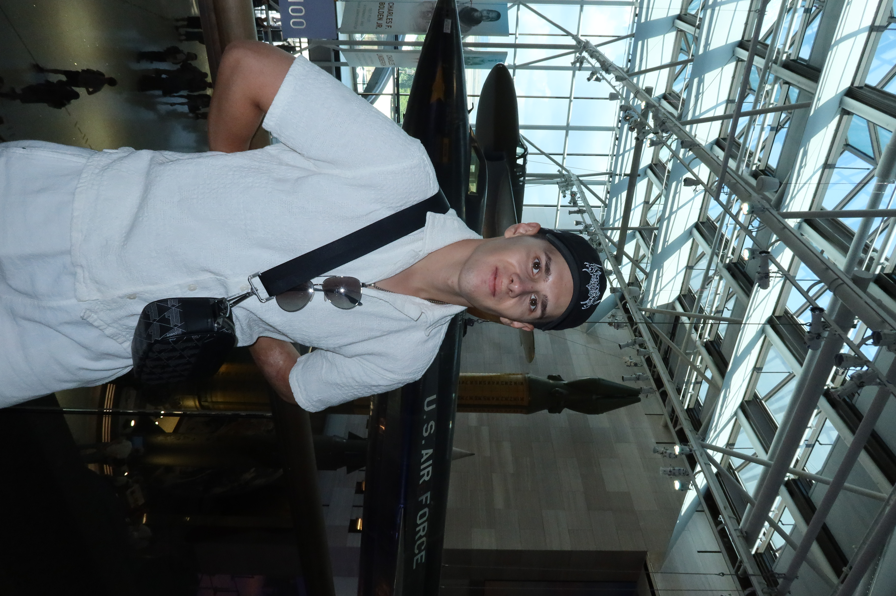

 kazacenoksergej50@gmail.com
kazacenoksergej50@gmail.com
 +1 347 444 6921
+1 347 444 6921
Major: Computer Science
College: Brooklyn
kazacenoksergej50@gmail.com+1 347 444 6921Major: Computer Science
College: Brooklyn
I'm a Computer Science student. I'm passionate about technology, problem-solving, and constantly learning new things. My interests include web development, programming in Java, and building practical tech solutions. In my free time, I enjoy fitness, exploring new tools, and contributing to small coding projects.